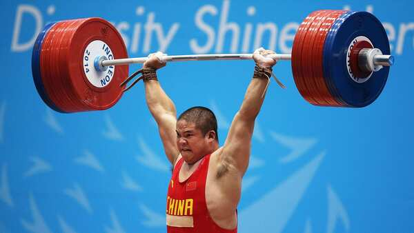
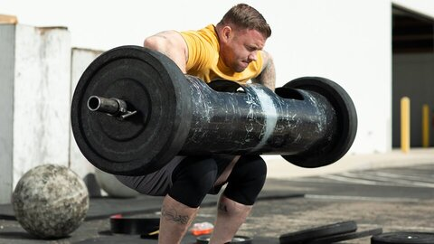

The different types of weightlifting Competitions
 Text ColorThere are many types of weightlifting competitions, from physique based competitions to strength to hypertrophy. The main types are:
Physique
There are a few types of physique based competitions, but the main ones are:
Classic Physique

A classic physique is based on having perfectly balanced and proportional muscles. In the competition there are mandatory poses:
- Front Double Biceps
- Side Chest
- Back Double Biceps
- Abdominal and Thighs
- Favorite Classic Pose (Not Most Muscular)
The judges will select the physique which is most in proportional, taking into account the skills of their posing.
Classic Bodybuilding

Classic bodybuilding is the in between of classic physique and bodybuilding. The weight of the bodybuilder is limited according to the height of that bodybuilder. The top 5 for the 2022 Arnold classic bodybuilding competition was:
- 1st: Brandon Curry
- 2nd: William Bonac
- 3rd: Steve Kuclo
- 4th: Samson Dauda
- 5th: Justin Rodriguez
A review of the Arnold classic physique:
Bodybuilding

Bodybuilding contains the biggest men out of these competitions, it is judged and based off seeing the potential of what a body can physically achieve and generally the bodybuilders in this section of the event are much bigger than the other events. The top 5 results for the Texas Pro Bodybuilding 2020 is:
- 1st: Andrew Jacked
- 2nd: Martin Fitzwater
- 3rd: Steve Kuclo
- 4th: Kamal Elgargni
- 5th: Quinton Eriya
Strength
Strongman
There are many different types of strongman activities, they include:
- Atlas Stones
-
stones are heavy natural stones which people are challenged to lift, proving their strength. They are common throughout northern Europe, particularly Scotland, Wales, Iceland (where they are referred to as steintökin), Scandinavia and North West England centred around Cumbria. Recently, lifting stones have been incorporated into the World's Strongest Man competitions, using various cast, found, or established challenge stones such as the Húsafell Stone. They also do a stylized version of an event derived from an ancient contest, in which men would see who could load the heaviest stone onto a stone wall, derived from building such a wall, where they are known as Atlas stones.
- Axle Press
-
The axle press is a distant cousin of an Olympic lift - the clean and jerk. The strongman must lift the axle from the floor to overhead. Unlike Olympic lifting, pretty much anything goes. As long as the competitor gets the axle from A to B it is usually accepted.
- Car Flip
- Car flip is when you have to flip a car over to show your strength, you have to try flip the car in the shortest time.
- Conan's Wheel
- Conan's wheel is when you have to carry a quadbike in a circle and try carry it the furtherest distance without dropping it.
- Inch dumbell
- Inch dumbell is an activity where you have to shoulder press a large round-ended dumbell with one arm.
- Deadlift
- Deadlift is when you have to
squat
and pick up a large weight off the floor. - Duck walk
- Duck walk is when you have to walk as far as you can holding weights in between your legs, making you look like you are walking like a duck.